Parceiros principais:
Student Keep
Tens um computador a mais? Ajuda um aluno que não tem acesso a um computador dando-lhe uma oportunidade para acompanhar melhor as aulas de ensino à distância.
Torna-te num Keeper! Faz a Educação ir mais longe!
Seleciona um dos formulários para começar
Sobre o projeto
Assegurar a igualdade no acesso ao ensino à distância é um desafio sentido à escala global. Consciente deste problema, a Cabo Verde Digital estabeleceu uma parceria com o Student Keep com o objetivo combater a desigualdade no acesso àEducação
A ação do projeto consiste na angariação de equipamento informático e posterior doação a alunos sem acesso a computador. Para tal, são identificados Keepers, padrinhos, que podem ser pessoas individuais ou coletivas, disponíveis para doar equipamento informático.
O projeto Student Keep pertence ao movimento português #tech4COVID19, criadopara desenvolver soluções tecnológicas, durante o período de pandemia COVID-19. Em Cabo Verde, a iniciativa é dinamizada pela Cabo Verde Digital.

Apoios
Este projeto conta com o apoio das seguintes entidades:


